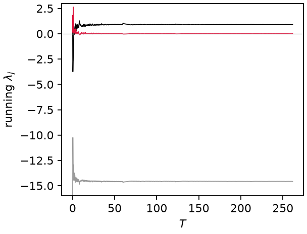
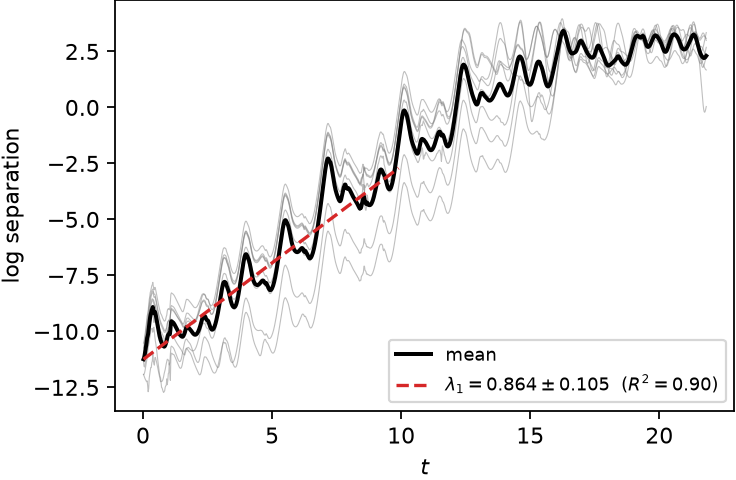
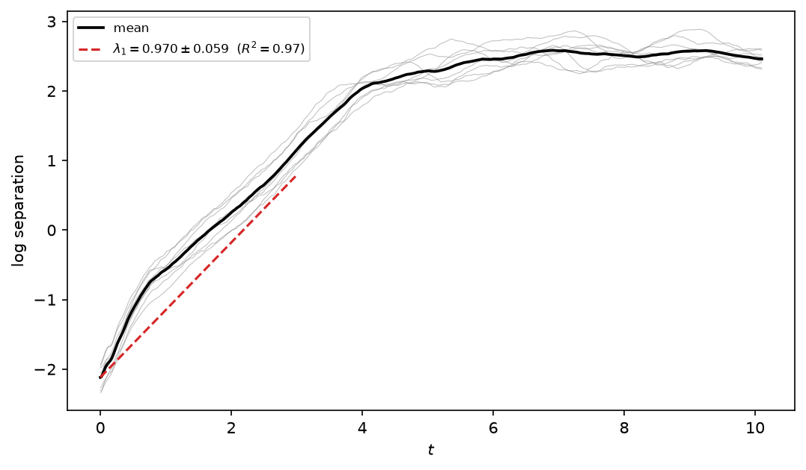

Lyapunov exponents
Three routes, by what is available: the full spectrum needs the model's right-hand side (and ideally its Jacobian); the perturbation-growth estimate only needs a model that can be re-integrated; the Rosenstein estimate needs nothing but the measured series. The Kaplan–Yorke dimension follows from the spectrum.
Full spectrum: Benettin QR
The full spectrum comes from evolving the state jointly with a tangent basis \(\Psi \in \mathbb{R}^{N_\phi \times n_\mathrm{exp}}\) under the variational equation
(RK4, analytic \(J\) for Lorenz63/96, finite differences otherwise), with QR re-orthonormalization \(\Psi = QR\) every \(N_\mathrm{gs}\) steps. The exponents are the time-averaged log growth of the diagonal of \(R\) [Benettin et al. 1980]:
Convergence control. The neutral (along-flow) exponent decays to zero only
as \(\mathcal{O}(1/T)\), so the horizon is extended (up to t_max) until the
halving test
passes at two consecutive checks (one can be a phase coincidence).

Running exponents of Lorenz63 converging to \([0.90,\ 0.00,\ -14.6]\).
Leading exponent from perturbation growth
Without any Jacobian (so it also works for discrete maps), leading_lyapunov
evolves an ensemble of perturbed copies \(\psi + \delta_0 \mathbf{e}\) and fits
the linear region of the mean log separation,
between the transient and the saturation plateau (automatic window; fit rejected if \(R^2 < 0.5\)).
Saturation guard. On a stable orbit, non-normal transient amplification can produce a large positive slope even though there is no chaos (thermoacoustic systems read \(\lambda_1 \sim 200\) this way). The fit is rejected when the separation saturates far below the attractor diameter while the tail has stopped growing:

Perturbation-growth fit on Lorenz63: \(\lambda_1 = 0.86 \pm 0.11\) from the linear region of the mean log separation.
Data-only: Rosenstein estimator
When only a measured series is available, rosenstein_lyapunov applies the same
idea to the delay embedding [Rosenstein et al. 1993]: each reference point
\(\mathbf{y}_i\) is paired with its nearest neighbour \(\mathbf{y}_j\) at least one
Theiler window \(w\) away in time (\(|i - j| > w\), with \(w\) the mean inter-maximum
spacing, so pairs sample different orbits rather than adjacent samples of the
same one), and the mean log divergence
is fitted over its linear window with the same machinery — and the same \(R^2\)
and growth-range guards — as above, so periodic or noise-bound data returns nan
rather than a spurious slope. Pairs are averaged in 8 blocks whose slope spread
gives the quoted uncertainty. This is what DataSeries.analyze runs by default,
letting measured data reach the chaotic label with no model at all:

Lorenz63 from measurements only: \(\lambda_1 = 0.97 \pm 0.06\) against the true 0.906.
Kaplan–Yorke dimension
With the exponents sorted \(\lambda_1 \geq \lambda_2 \geq \dots\) and \(j\) the largest index with \(\sum_{i=1}^{j} \lambda_i \geq 0\),
conjectured equal to the information dimension [Kaplan & Yorke 1979]. Shown as a text box on the delay-portrait panel.
References are collected on the theory overview.